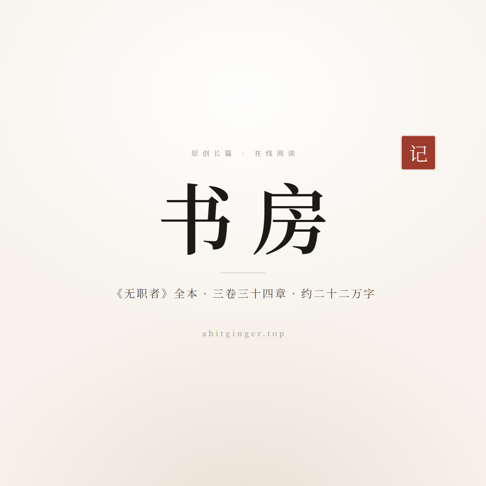
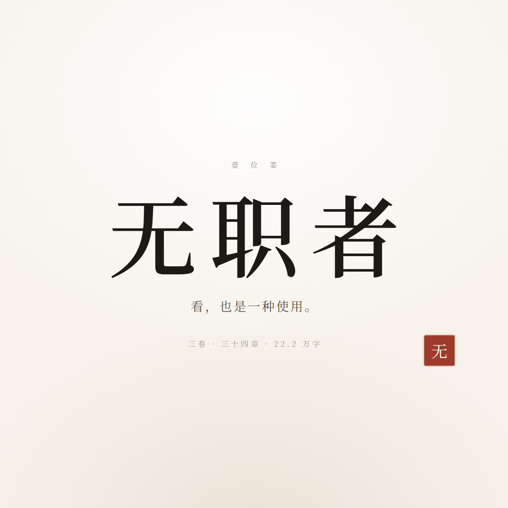

① 分享书架首页 /novels/
书房 ·《无职者》全本在线阅读
一个被培育出来、却没有被赋予任何用途的生物，在一座正在慢慢饿死的活体世界里，寻找「我是什么」。

② 分享某本书的扉页 /novels/wuzhizhe/
《无职者》· 看，也是一种使用。
一个被培育出来、却没有被赋予任何用途的生物，在一座正在慢慢饿死的活体世界里，寻找「我是什么」。

③ 分享具体章节 /novels/wuzhizhe/卷一_误/01_育.html
第一章 · 育 - 无职者
一个被培育出来、却没有被赋予任何用途的生物，在一座正在慢慢饿死的活体世界里，寻找「我是什么」。